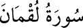

<a name=6469></a><br/>
<b>31- LOKMÂN SÛRESİ</b><br/>
<i><b>Mekke’de nâzil olmuştur. </b></i><br/>
<i><b>27, 28 ve 29. âyetlerinin Medine’de nâzil olduğu da rivâyet edilmiştir. </b></i><br/>
<i><b>34 âyettir. </b></i><br/>
<i><b>Hz. Lokman’ın kıssasını anlattığı için bu adı almıştır.</b></i><br/>
